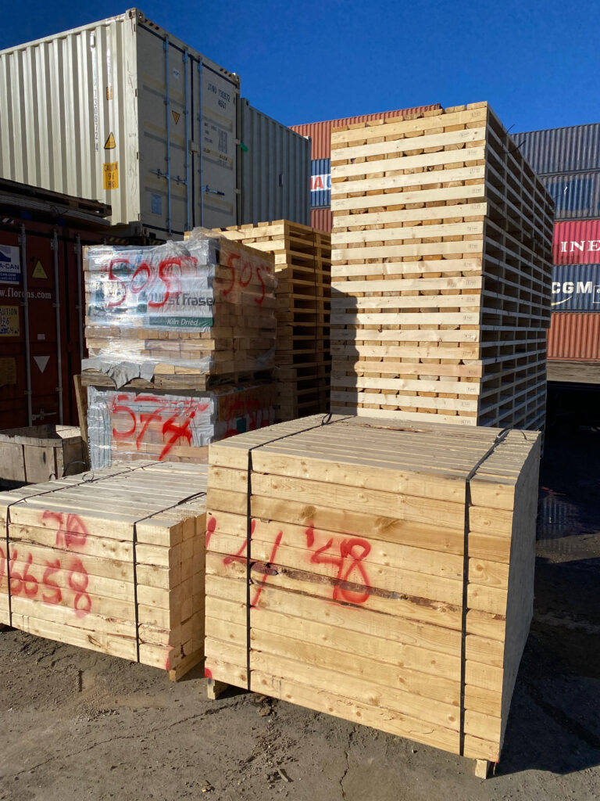

Service
Dunnage Material Supplying
Reliable dunnage and lashing material delivery for safe cargo protection and compliant vessel operations.
Service Gallery
Dunnage materials and securing supplies
Industry sectors
We provide tailored dunnage materials and cargo securing solutions to support a wide range of vessel operations and cargo profiles. Our approach is practical and flexible, ensuring that each shipment is supported with the appropriate materials to maintain cargo stability, prevent damage, and comply with handling requirements throughout the loading and transportation process.
Garments & Textiles
Consumer Goods
Industrial Materials

Service Scope
What We Provide
Reliable material sourcing, delivery coordination, and on-ground support for vessel cargo protection requirements.
Types of cargo we support
- Dry bulk and bagged cargo (rice, feed, grains)
- General cargo and mixed consignments
- Palletized and packaged consumer goods
- Project and industrial cargo with special securing needs
What we use
- Wooden dunnage, wedges, and packing supports
- Lashing belts, wires, clips, and cargo securing tools
- Custom quantities based on vessel and cargo plan
- Short-notice and urgent supply mobilization

Process
How the service works
Step 1
Share vessel details
Send vessel ETA, berth location, cargo type, and required materials.
Step 2
Material preparation
We arrange dunnage, lashing, and securing materials based on your needs.
Step 3
Port delivery
Materials are delivered according to vessel schedule and loading window.
Step 4
Operational support
Our team coordinates with port and vessel representatives during operations.
Need dunnage materials for your vessel?
Send us your ETA, berth details, and cargo requirements. We will coordinate the material supply and delivery schedule.